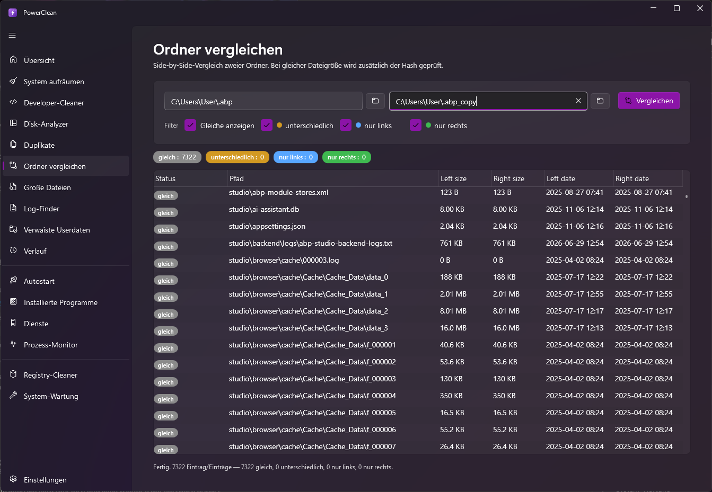
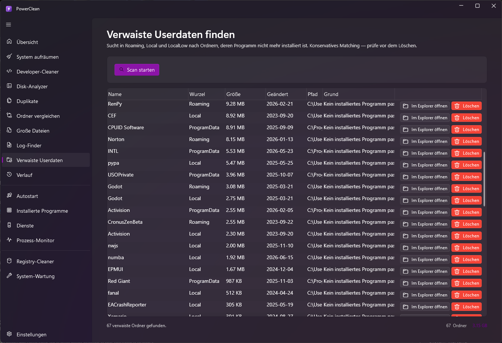
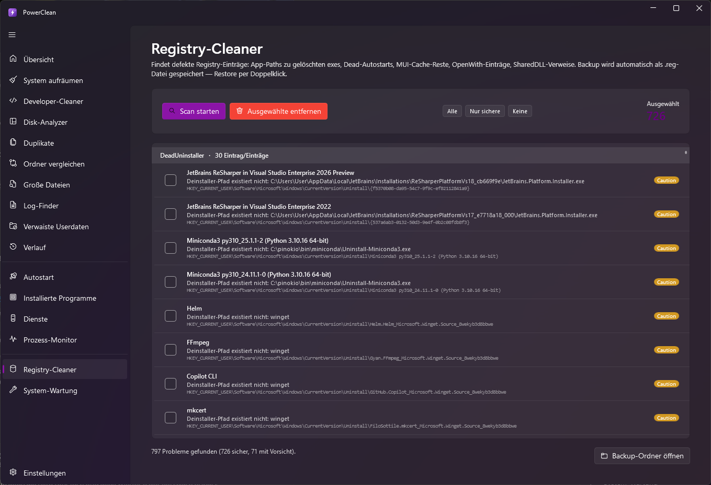
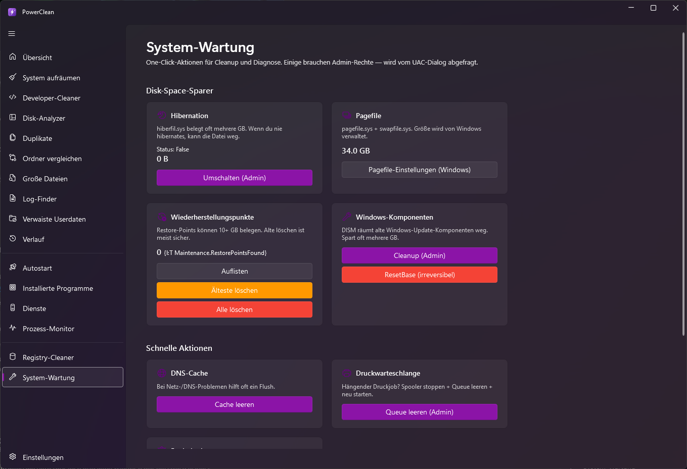

Dokumentation & Hilfe
Alles, was du über PowerClean wissen musst — jeder Bereich, jedes Feature und alle Einstellungen, verständlich erklärt.
Was ist PowerClean?
PowerClean ist ein kostenloses All-in-One-Tool für Windows 10 und 11, um deinen PC aufzuräumen, Speicher freizugeben und das System im Griff zu behalten. Es vereint klassische Cleaner-Funktionen mit einem Disk-Analyzer, Duplikat-Finder, Prozess-Monitor, Autostart- und Dienste-Verwaltung und mehr.
100 % gratis, keine Werbung, keine Telemetrie. PowerClean sendet keine Nutzungsdaten und blendet keine Werbung ein. Der einzige Netzwerkzugriff ist der optionale Update-Check gegen GitHub.
Installation & Update
Setup oder Portable?
- Setup (.exe): Installiert PowerClean regulär inkl. Startmenü-Eintrag und aktiviert den integrierten Auto-Updater. Empfohlen für den Dauereinsatz.
- Portable (.zip): Einfach entpacken und
PowerClean.exestarten — keine Installation, ideal für den USB-Stick. (Auto-Update ist hier nicht aktiv.)
Updates
Die installierte Version prüft beim Start im Hintergrund auf Updates und bietet dir bei einer neuen Version ein Ein-Klick-Update an. Du kannst auch jederzeit unter Einstellungen → Über manuell nach Updates suchen.
Administrator-Rechte
Die meisten Funktionen laufen ohne Admin-Rechte. Einige Bereiche (z. B. Windows-Update-Cache,
C:\Windows\Temp, Windows.old, bestimmte Dienste) benötigen erhöhte Rechte — sie sind mit
dem Badge Admin gekennzeichnet. Starte PowerClean als Administrator,
um sie vollständig zu nutzen.
Sicherheitskonzept
PowerClean ist „safe by default" aufgebaut. Jede Aufräum-Kategorie trägt eine Sicherheitsstufe:
- Sicher Kann bedenkenlos gelöscht werden, wird automatisch neu erstellt (z. B. Thumbnail-Cache).
- Empfohlen Löschen sinnvoll, minimale Folgen (z. B. Browser-Cache = evtl. etwas längere Ladezeiten).
- Vorsicht Kann Re-Logins erfordern oder Neuaufbau-Zeit kosten (z. B. IDE-Caches).
- Warnung Möglicherweise unwiderrufliche Folgen (z. B. Windows.old, Memory-Dumps).
Standardmäßig sind nur Sicher- und Empfohlen-Kategorien vorausgewählt. Zusätzlich schützen dich drei Mechanismen:
- Papierkorb-Standard: Gelöschtes geht in den Papierkorb und kann wiederhergestellt werden.
- Verlauf & Undo: Jeder Vorgang wird protokolliert (siehe Verlauf).
- Schutzregeln: Bestimmte Pfade und zu junge Dateien bleiben immer unangetastet (siehe Schutzregeln).
Übersicht (Dashboard)

Die Startseite ist deine Kommandozentrale:
- Quick-Scan: Scannt in einem Rutsch alle empfohlenen Kategorien.
- Alles aufräumen: Räumt die gefundenen Kategorien auf — wahlweise in den Papierkorb oder endgültig (Split-Button).
- Insights-Kacheln: „Gesamt freigegeben", „Diesen Monat freigegeben" und ein Speicher-Gesundheit-Score (0–100) auf Basis deines freien Speichers.
- Laufwerke: Belegung aller Laufwerke auf einen Blick.
- Windows-Tools: Schnellzugriff auf Speicheroptimierung, Datenträgerbereinigung, App-Verwaltung und Task-Manager.
- Empfohlene Aufräumaktionen: Die wichtigsten Kategorien direkt zum Einzel-Aufräumen.
System aufräumen

Hier räumst du Windows- und App-Müll auf: Benutzer- und Windows-Temp, Thumbnail- & Icon-Cache, Windows-Update-Cache, Prefetch, Papierkorb, Delivery-Optimization, Memory-Dumps, Browser-Caches (Chrome, Edge, Brave, Firefox) sowie App-Caches von Teams, Slack, Discord und Spotify.
Der typische Ablauf
- Scan starten — PowerClean ermittelt pro Kategorie Größe und Dateianzahl (parallel, mit Live-Fortschritt).
- Kategorien per Checkbox an- oder abwählen. Aufklappen zeigt die konkreten Pfade.
- Aufräumen — entweder „Ausgewählte aufräumen" (alle angehakten) oder der Aufräumen-Button pro Zeile für genau eine Kategorie.
Andere Ergebnisse bleiben erhalten. Räumst du eine einzelne Kategorie auf, behalten alle anderen ihre Scan-Ergebnisse — du musst nicht neu scannen. Die „Gefunden"-Summe oben aktualisiert sich automatisch.
Werkzeugleiste
Über der Liste findest du Profile, den Alters-Filter „nur älter als X Tage", die Suche und den Export — alle im Detail unter Profile, Suche & Export.
Developer-Cleaner

Speziell für Entwickler: Diese Caches und Artefakte belegen oft zweit mehr Platz als vermutet und werden bei Bedarf automatisch neu aufgebaut:
- JavaScript:
node_modules, npm-, pnpm- & Yarn-Cache - .NET: NuGet-Cache (HTTP & global),
bin/&obj/-Build-Artefakte - Weitere: Docker, Gradle, Maven (
.m2), Python pip, Rust Cargo, Go-Module, JetBrains- & Visual-Studio-Caches
node_modules und Build-Artefakte werden nur in erkannten Projektordnern gesucht (dort, wo eine Projektdatei in der Nähe liegt) — es werden keine zufällig benannten Ordner gelöscht.
Verlauf & Wiederherstellen
Jeder Aufräum-Vorgang wird mit Zeitpunkt, Kategorie, Dateianzahl, freigegebener Größe und Modus (Papierkorb / endgültig) festgehalten. Oben siehst du, wie viel du insgesamt freigegeben hast.
- Wiederherstellen: Bei Papierkorb-Löschungen holt PowerClean die Dateien wieder an ihren Ursprungsort zurück — solange sie noch im Papierkorb liegen.
- Papierkorb öffnen: Öffnet den Windows-Papierkorb für die manuelle Wiederherstellung.
- Eintrag entfernen / Verlauf leeren: Räumt die Verlaufsliste auf (löscht keine Dateien).
Endgültig gelöscht = weg. Wurde eine Kategorie ohne Papierkorb (endgültig) gelöscht, ist keine Wiederherstellung über PowerClean möglich. Im Zweifel den Papierkorb-Modus nutzen.
Disk-Analyzer

Finde heraus, was deinen Speicher belegt. Wähle ein Laufwerk oder einen Ordner und starte den Scan — die Treemap baut sich live auf, große Bereiche = große Ordner.
- Drilldown: Doppelklick öffnet einen Ordner; die Breadcrumb-Leiste führt zurück.
- Top-Einträge: Die größten Unterordner/Dateien mit Anteilsbalken.
- Aufschlüsselung: Für den aktuellen Ordner nach Dateityp (Videos, Bilder, Audio, Archive, Dokumente, Code, Programme), nach Alter (Heatmap von „< 1 Woche" bis „> 1 Jahr") und die größten Einzeldateien.
- Aktionen: Rechtsklick auf einen Eintrag zum Öffnen im Explorer, Terminal, Eigenschaften oder direkten Löschen.
Duplikate

Findet exakt identische Dateien über einen Hash-Vergleich (nicht nur gleiche Namen). Wähle Suchordner und eine Mindestgröße, um Bagatell-Treffer auszublenden. Ergebnisse werden in Gruppen angezeigt; du entscheidest pro Gruppe, welche Kopie bleibt.
Die Mindestgröße stellst du in den Einstellungen ein (Standard: 100 KB).
Ordner vergleichen

Stellt zwei Ordner gegenüber und zeigt, was nur links, nur rechts oder auf beiden Seiten (identisch oder unterschiedlich) existiert. Praktisch vor einem Backup oder beim Zusammenführen von Sammlungen.
Große Dateien
Listet die größten Dateien ab einem Schwellwert (Standard 100 MB, einstellbar) auf. Sortiere nach Größe und räume gezielt die größten Brocken weg — mit Explorer-Öffnen und Löschen direkt aus der Liste.
Log-Finder

Spürt alte Log-, Temp- und Backup-Dateien nach Muster und Alter auf. Standard-Muster sind z. B.
*.log, *.tmp, *.bak, *.old, *.dmp —
anpassbar in den Einstellungen, ebenso das Mindestalter.
Verwaiste Userdaten

Findet zurückgelassene Daten deinstallierter Programme in AppData, ProgramData
& Co. Solche „Leichen" bleiben oft jahrelang liegen. PowerClean zeigt Herkunft und Größe, damit du
gezielt entscheiden kannst.
Autostart

Zeigt alle Programme, die mit Windows starten (Registry-Run-Keys, Startmenü-Autostart u. a.). Du kannst Einträge deaktivieren oder entfernen, den Speicherort im Explorer öffnen, den Befehl kopieren oder die Datei-Eigenschaften ansehen — so verkürzt du deine Boot-Zeit.
Installierte Programme
Eine übersichtliche Liste aller installierten Programme mit Größe und Hersteller. Deinstalliere, was du nicht mehr brauchst — schneller als über die Windows-Systemsteuerung.
Dienste

Verwaltet Windows-Dienste: Status ansehen, starten/stoppen und den Starttyp ändern. Nützlich, um unnötige Hintergrunddienste zu bändigen.
Deaktiviere nur Dienste, die du kennst. Manche werden von Windows benötigt. Änderungen an Diensten erfordern in der Regel Admin-Rechte.
Prozess-Monitor

Ein leichtgewichtiger Task-Manager-Ersatz mit einem entscheidenden Vorteil: Er beendet auch Prozesse, an denen der Windows-Task-Manager scheitert.
- Hängende Prozesse killen: PowerClean beendet festgefahrene, nicht reagierende Prozesse zuverlässig.
- Prozessbäume: Beendet einen Prozess samt aller Kindprozesse.
- Live-Ressourcen: CPU- und RAM-Verbrauch in Echtzeit, sortierbar — der Ressourcenfresser steht sofort oben.
- Suche & Auto-Refresh: Filtere nach Name/PID; das Aktualisierungsintervall ist einstellbar.
Registry-Cleaner

Sucht verwaiste und ungültige Registry-Einträge (fehlende Dateiverweise, tote Verknüpfungen u. Ä.) und lässt dich diese kontrolliert entfernen. Du behältst die Auswahl in der Hand.
Registry-Aufräumen bringt selten spürbar Tempo, kann aber Altlasten beseitigen. PowerClean bleibt bewusst konservativ und entfernt nur eindeutig verwaiste Einträge.
System-Wartung

Bündelt gängige Windows-Wartungsaufgaben an einem Ort — etwa Integritätsprüfungen und Wartungs-Kommandos, die man sich sonst als Kommandozeilen-Befehle merken müsste. Mit Live-Ausgabe.
Einstellungen

Zentrale Konfiguration — alle Einstellungen werden automatisch gespeichert:
- Darstellung: Dark- oder Light-Mode.
- Sprache: Deutsch oder Englisch (sofort umschaltbar).
- Papierkorb verwenden: Legt fest, ob standardmäßig in den Papierkorb oder endgültig gelöscht wird.
- Schwellwerte: Mindestgröße für „Große Dateien" und für die Duplikat-Suche.
- Log-Finder: Datei-Muster und Mindestalter.
- Schutzregeln: siehe unten.
- Über: Version, Update-Suche und Link zum GitHub-Repo.
Schutzregeln
Zwei globale Regeln schützen dich vor versehentlichem Löschen — sie gelten für alle Cleaner, beim Scannen und beim Löschen:
- Ausschluss-Pfade: Trage Begriffe/Pfade ein (einer pro Zeile). Jeder Pfad, der einen dieser Begriffe enthält, wird nie angefasst (Teilstring-Vergleich, Groß-/Kleinschreibung egal). Beispiel:
\wichtig\oderMeinProjekt. - Nur Dateien älter als X Tage: Schützt kürzlich erstellte Dateien. Bei
0gibt es kein Limit.
Den Alters-Filter erreichst du auch direkt in der Cleaner-Werkzeugleiste („Nur älter als … Tage"). Nach dem Ändern einmal neu scannen, damit die Auswahl greift.
Profile, Suche & Export
Profile (Presets)
Speichere deine Kategorie-Auswahl als benanntes Profil und wende sie später mit einem Klick wieder an — ideal für wiederkehrende Routinen („Schnell", „Vor Backup", „Developer").
- Kategorien anhaken → Speichern… → Namen vergeben.
- Profil im Dropdown wählen → Anwenden setzt genau diese Haken.
- Das Mülleimer-Symbol löscht das gewählte Profil.
Suche
Das Suchfeld filtert die Kategorien-Liste live nach Name und Beschreibung.
Export
Exportiere die aktuellen Scan-Ergebnisse als CSV oder JSON (inkl. Kategorie, Dateianzahl, Größe und Pfaden) — z. B. für Reports oder zur Dokumentation.
Datenschutz
PowerClean arbeitet vollständig lokal. Es gibt keine Werbung, keine Analytics und keine Weitergabe von
Daten. Der einzige ausgehende Netzwerkzugriff ist der optionale Update-Check gegen die GitHub-Releases.
Deine Einstellungen, Profile und der Verlauf liegen lokal unter
%LocalAppData%\PowerClean.
FAQ
Ist PowerClean wirklich komplett kostenlos?
Ja. Kein Preis, kein „Pro", keine Werbung, kein gebündeltes Beiwerk. Der Quellcode ist offen auf GitHub.
Ist es sicher?
PowerClean ist konservativ ausgelegt: sichere Voreinstellungen, Papierkorb-Standard, Verlauf mit Wiederherstellen und globale Schutzregeln. Trotzdem gilt: Prüfe bei Vorsicht- und Warnung-Kategorien, was du löschst.
Kann ich Gelöschtes zurückholen?
Wenn es in den Papierkorb ging: ja, über den Verlauf. Bei endgültigem Löschen nicht.
Brauche ich Admin-Rechte?
Für den Großteil nicht. Einige System-Bereiche (mit Admin markiert) benötigen sie — dann PowerClean als Administrator starten.
Läuft es auf Windows 7 / 8?
Offiziell unterstützt sind Windows 10 und 11 (64-bit).
Wo finde ich Hilfe oder melde einen Fehler?
Über die GitHub-Issues.
Bereit? Lade PowerClean kostenlos herunter — Setup oder Portable.